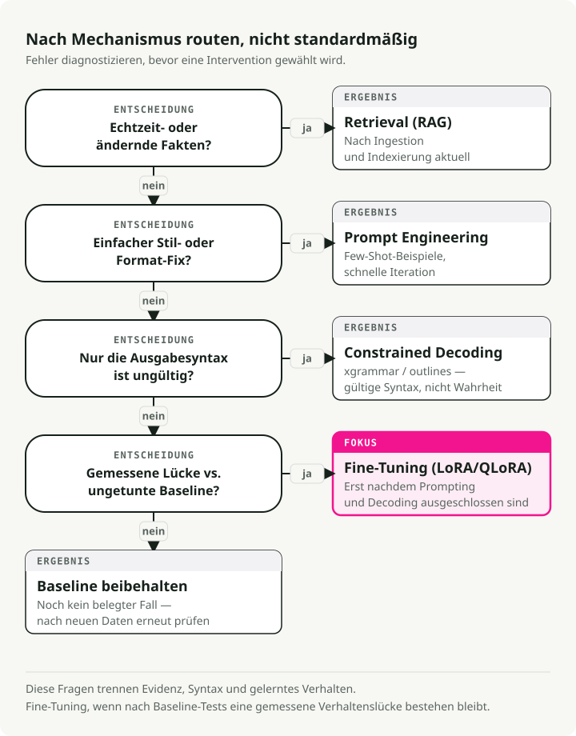
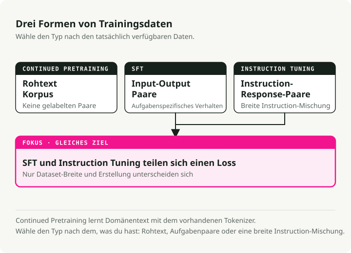
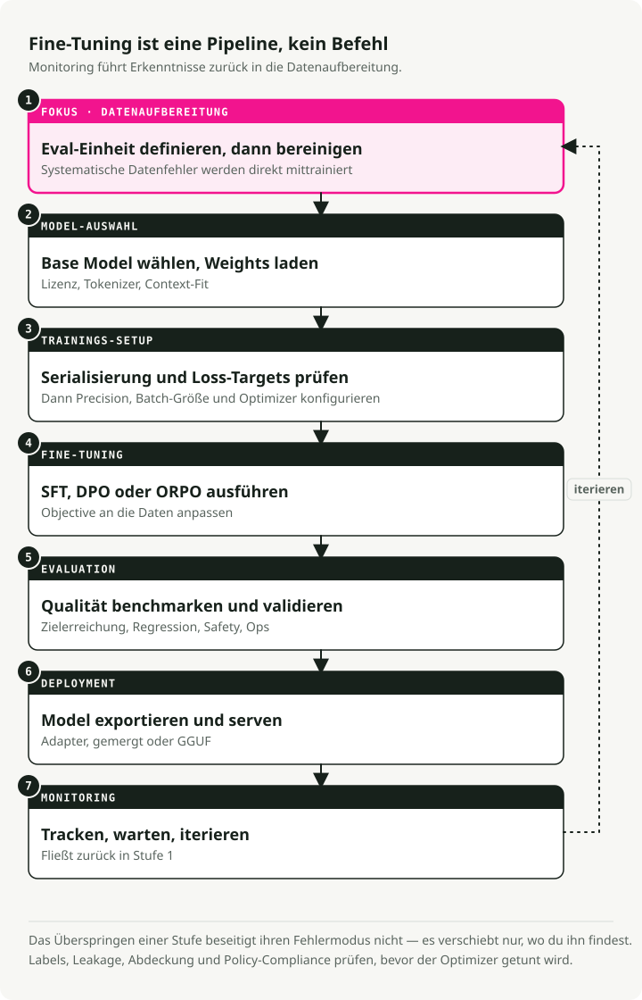
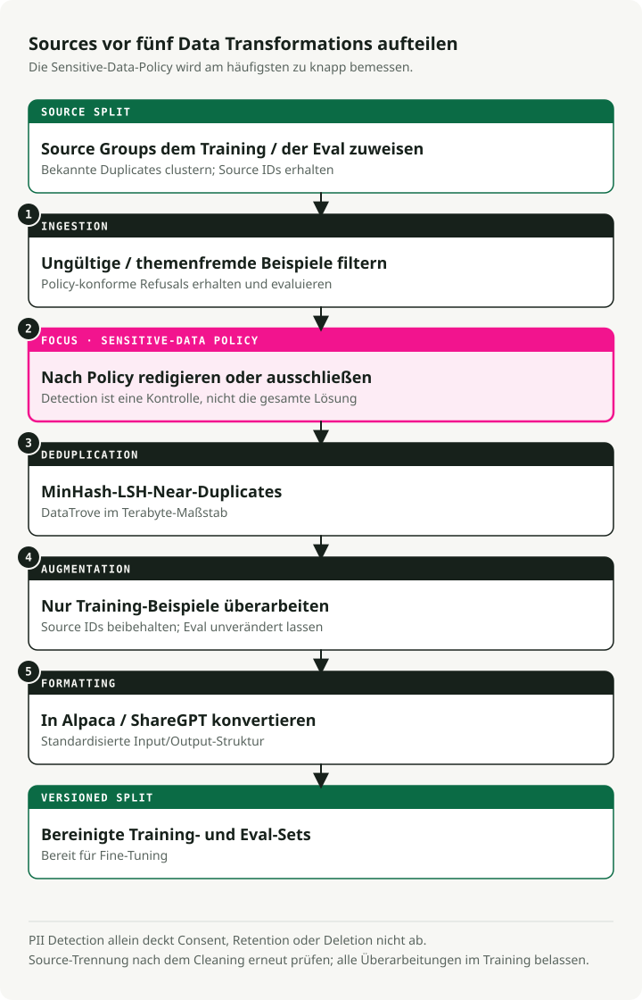
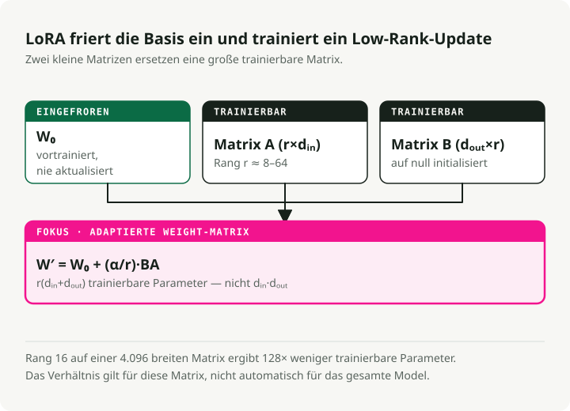
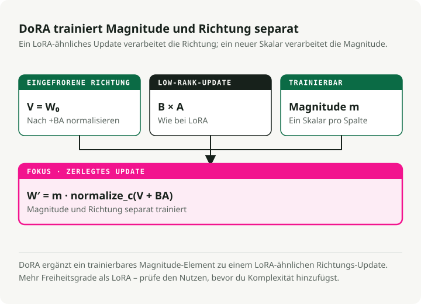
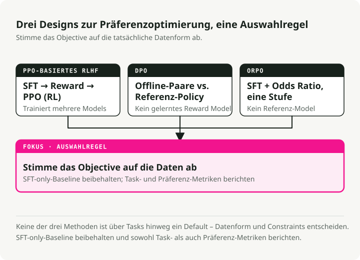
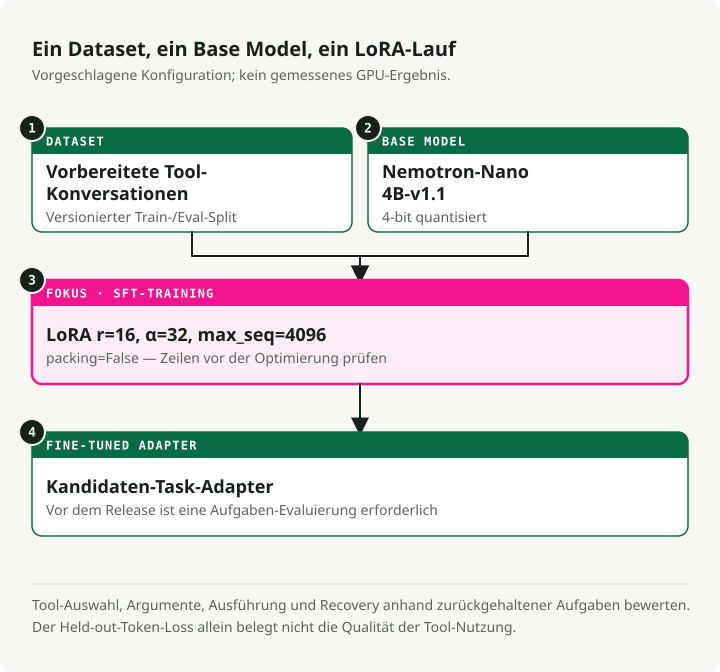
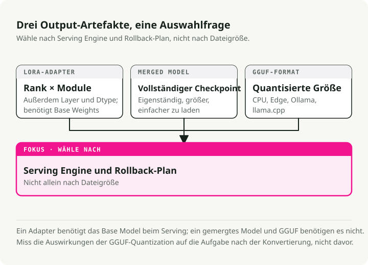

Automatische Übersetzung
Dieser Artikel wurde automatisch aus der englischen Originalversion übersetzt.
Leitfaden zur Feinabstimmung von LLMs: LoRA, QLoRA, DoRA, Unsloth, Axolotl und Bereitstellung
Die meisten Feinabstimmungsprojekte, die ich gesehen habe, scheitern nicht beim Training selbst, sondern an den Schritten davor und danach: schlechte Daten, das falsche Basismodell sowie fehlende echte Bewertungen. Das eigentliche Training ist dabei der einfachere Teil. Dieser Leitfaden wäre genau das gewesen, was ich mir vor meiner ersten ernsthaften Feinabstimmung gewünscht hätte – Informationen darüber, wann man sie durchführen sollte, wann nicht, welche Methoden heute funktionieren (LoRA, QLoRA, DoRA, ORPO) sowie wie man ein Modell von einem Notebook zu einem Bereitstellungs-Endpoint bringt.
Zusammenfassung: Führen Sie Feinabstimmungen nur durch, wenn Prompting und RAG nicht zuverlässig das Verhalten, die Formatierung, die Latenz oder die Kosten ändern können. Beginnen Sie mit LoRA oder QLoRA, erstellen Sie ein sauberes Datensatz vor dem Anpassen der Hyperparameter, bewerten Sie die Ergebnisse anhand eines getrennten Testdatensatzes und entscheiden Sie erst danach, ob eine vollständige Feinabstimmung den Aufwand in Bezug auf die Infrastrukturkosten rechtfertigt.
Sollten Sie überhaupt feinabstimmen?
Bevor Sie GPU-Stunden investieren, prüfen Sie zunächst, ob Feinabstimmungen tatsächlich das richtige Mittel für das vorliegende Problem sind.

Feintuning versus RAG
Führen Sie kein Feintuning durch, nur um „Wissen“ hinzuzufügen. Verwenden Sie stattdessen diese Trennung:
| Funktion | Feintuning | RAG (Retrieval-Augmented Generation) |
|---|---|---|
| Kernfunktion | Alteriert die internen Gewichte, um Fähigkeiten, Stile oder Verhaltensweisen zu vermitteln | Stellt zu Zeitpunkt der Inferenz externe, aktuelle Kontextinformationen bereit. |
| Am besten geeignet für | • Spezifische Konversationsstile • Komplexe Befehlsausführung • domänenspezifisches Reasoning |
• Schnell wechselnde Daten (Nachrichten, Aktienkurse) • Verringerung von Halluzinationen (Begründung durch Belege) • Angabe von Quellen |
| Wissensverarbeitung | Internalisiert Muster, nicht Fakten | Fakten aus einer externen Wissensdatenbank abrufen |
| Aktualisierungsfrequenz | Erfordert ein Neutraining für Aktualisierungen | Wird umgehend mit neuen Dokumenten aktualisiert. |
Feintuning im Vergleich zur Prompt-Engineering-Strategie
Moderne Large Language Models reagieren außergewöhnlich gut auf sorgfältig formulierte Anfragen. Erstellen Sie alle möglichen Prompt-Varianten aus, bevor Sie zu einer Feinabstimmung übergehen.
| Aspekt | Feintuning | Prompt-Engineering |
|---|---|---|
| Einrichtungskosten | Niedrig (iterative Feinabstimmung des Prompts) | |
| Flexibilität | Nach dem Training gesperrt | Jederzeit ändern – ohne Neutraining nötig |
| Format/Stil | Ideal für komplexe, konsistente Ausgabeformate. | Gut geeignet für einfache Formatierungen mit wenigen Beispielen. |
| Verzögerung | Höhere Kontextsteuer pro Anfrage | |
| Am besten geeignet für | Komplexe Verhaltensmuster, Destillation, Skalierungskosten | Schnelle Iterationen und sich ändernde Anforderungen |
[!TIP] Versuchen Sie zunächst, eine Anfrage zu stellen. Beginnen Sie mit wenigen Beispielen im Prompt. Falls das Verhalten weiterhin inkonsistent ist, wenden Sie vor dem Feintunen zunächst SGR an.
Feintuning im Vergleich zum schemabasierten Reasoning (SGR)
Bibliotheken wie xgrammar und outlines Die Ausgaben des Modells können zur Inferenzzeit mithilfe endlicher Zustandsmaschinen eingeschränkt werden. Diese funktionieren direkt mit Basismodellen – ohne jegliches Trainingsvorgang nötig zu sein.
Der Wert von SGR liegt nicht nur in den strukturierten Ausgaben, sondern vor allem in der Konsistenz: Derselbe Eingabepfad ergibt stets denselben Ausgabepfad, ohne dass etwas neu trainiert werden muss. Wenn allein das Prompten zu inkonsistenten Ergebnissen führt, fixiert SGR das AusgabeMuster zum Zeitpunkt der Dekodierung.
| Aspekt | Feintuning | |
|---|---|---|
| Einstellung | Sofort – Schema definieren und bereitstellen | Erfordert Datenkuratierung, GPU-Berechnungen sowie iterative Optimierungen. |
| Konsistenz | Garantierte Struktur, zuverlässige Muster | Gelerntes Verhalten (kann noch variieren) |
| Flexibilität | Das Schema kann jederzeit ohne Neutraining geändert werden. | Nach dem Training gesperrt |
| Verzögerung | Geringer Overhead (das Modell kann mit dem Schema in Konflikt geraten) | |
| Am besten geeignet für | Strukturierte Ausgaben, konsistentes Verhalten | Komplexe Abwägungen, tiefgreifende Verhaltensänderungen |
Eine praktische Vorgehensweise:
- Beginnen Sie mit Prompting und Few-Shot-Beispielen für die grundlegende Formatierung.
- Fügen Sie SGR hinzu.
xgrammaroderoutlines) tritt auf, wenn das Format inkonsistent ist. - Führen Sie eine Feinabstimmung nur dann durch, wenn Sie Verhaltensänderungen benötigen, die durch ein Schema nicht erzwungen werden können.
Schnellreferenz: Zuordnung von Problemen zu Lösungen
| Herausforderung | Beste Lösung | Warum? |
|---|---|---|
| Fehlendes Wissen | RAG | Modelle erzeugen Faktenhalluzinationen. Die Informationsabrufung liefert fundierten, aktuellsten Kontext. |
| Falsches Format/Stil | Prompt-Engineering | Moderne Modelle befolgen Stilanweisungen durch wenige Beispielfälle sehr gut. |
| Unkonsistente Ausgaben | Garantierte Struktur und Zuverlässigkeit ohne Training nötig | |
| Komplexe Verhaltensänderungen | Feintuning (SFT) | Tiefe Persönlichkeitsprofile, Schlussfolgerungsmustern oder mehrstufige Arbeitsabläufe |
| Sicherheit/Einstellungen | Ausrichtung (DPO) | Wenn die Ausgaben korrekt sind, aber nicht den Präferenzen entsprechen |
| Verzögerung/Kosten bei Skalierung | Destillation (SFT) | Ein kleineres Schülermodell auf den Ausgaben des größeren Lehrermodells trainieren |
| Modellgröße verringern | Quantisierung | Keine Trainingsphase – Komprimiere die Gewichte (FP16→INT4) für schnellere Inferenz |
Wenn die Mathematik tatsächlich funktioniert
Das Feintunieren lohnt sich besonders dann, wenn der Traffic hoch ist und die Anforderungen stabil bleiben. Eine solide RAG-Infrastruktur enthält in der Regel bei jedem Aufruf 2.000 Tokens an Kontextinformationen – darunter Systemanweisungen, abgerufte Dokumente sowie Few-Shot-Beispiele. Das stellt eine Art „Kontextsteuer“ dar, die bei jeder Anfrage entsteht.
Ein feinabgestimmtes Modell übernimmt den Großteil dieser Anweisungen in seine Gewichte, wodurch die Anzahl der Tokens für den Prompt von etwa 2.000 auf rund 50 sinkt. Bei ausreichendem Volumen kann so die für das Training benötigte Rechenleistung innerhalb weniger Wochen wieder erreicht werden.
[!TIP] Die hybride Konfiguration Das Muster, das ich in der Praxis häufig beobachte: ein feinabgestimmtes 8B-Modell in Kombination mit einem kleinen RAG-Retriever zur Abrufung von Fakten. Solche Systeme schneiden oft besser ab als Modelle mit 70B+ Parametern – sowohl hinsichtlich Genauigkeit als auch Kosten.
Arten des Feinabstimmens
Es gibt drei Hauptformen, die das Feinabstimmen annehmen kann. Sie unterscheiden sich dadurch, welche Art von Daten benötigt wird und was dem Modell vermittelt wird.

1. Fortgesetztes Vortrainieren (unüberwacht)
Beim Vortrainieren mit unüberwachtem Lernen wird das Basismodell mit weiteren Rohtexten trainiert, wobei keine Etiketten vorhanden sind. Es führt weiterhin Vorhersagen für den nächsten Token durch, genauso wie während des ursprünglichen Vortrainingsprozesses.
Wann ist dieses Verfahren geeignet:
- Der Anwendungsbereich weist ein Vokabular auf, das das Basismodell noch nie gesehen hat (medizinisch, juristisch oder interne Codebasen).
- Sie verfügen über große Mengen an Texten aus dem jeweiligen Bereich, aber keine gelabelten (Eingabe-, Ausgabepaare).
- Das Basismodell hat Schwierigkeiten mit terminologischen Besonderheiten des Anwendungsbereichs.
Beispiel: Training mit Millionen von klinischen Notizen, damit das Modell medizinische Abkürzungen, Arzneimittelnamen sowie klinische Arbeitsabläufe erlernt.
2. Überwachtes Feintuning (SFT)
Beim überwachten Feintuning werden gelabelte (Eingabe-, Ausgabepaare) verwendet. Dabei wird dem Modell die exakte Ausgabe gezeigt, die man für jede Eingabe erwartet.
Wann ist dieses Verfahren geeignet:
- Sie haben eine spezifische Aufgabe mit einem klaren Eingabe-/Ausgabe-Format.
- Sie verfügen über qualitativ hochwertige, gelabelte Daten – auch in geringer Menge.
- Sie benötigen vorhersehbares Verhalten für Eingaben einer bestimmten Struktur.
Beispiel: Training mit Paaren aus Beschreibungen von SQL-Abfragen und den entsprechenden SQL-Code-Texten für den Prozess Text-zu-SQL.
{
"input": "Get all users who signed up last month",
"output": "SELECT * FROM users WHERE signup_date >= DATE_SUB(NOW(), INTERVAL 1 MONTH)"
}
3. Anpassung der Anweisungen
Instruction Tuning ist ein Spezialfall von SFT, der darauf abzielt, Modelle dazu zu bringen, einer Vielzahl von Anweisungen in natürlicher Sprache zu folgen. Die Trainingsdaten bestehen aus (Anweisung, Antwort)-Paaren für zahlreiche unterschiedliche Aufgaben.
Wann es einzusetzen ist:
- Sie möchten einen Allzweck-Assistenten (wie ChatGPT oder Claude).
- Das Modell muss mit vielfältigen, offenen Anfragen umgehen können.
- Sie entwickeln eine Chat-Schnittstelle.
Beispiel: Training mit Tausenden verschiedener Anweisungen wie „Zusammenfassen Sie diesen Artikel“, „Schreiben Sie ein Gedicht über X“ oder „Erklären Sie Y in einfachen Worten“.
Vergleich
| Aspekt | Fortgesetztes Vorkennzeichnungstraining | Anleitungsoptimierung | |
|---|---|---|---|
| Daten | Rohtext | (Input-, Output-)Paare | (Einweisungs-, Antwort-)Paare |
| Etiketten | Keines (unüberwacht) | auf die Aufgabe bezogen | Verschiedene Aufgaben |
| Ziel | Domainwissen | Spezifisches Verhalten der Aufgabe | Befolgen Sie alle Anweisungen. |
| Datenmenge | Groß (Millionen von Tokens) | Klein-Mittel (500–10.000 Beispiele) | Mittelgroß (10k–100k Beispiele) |
[!NOTE] Was die Nutzer tatsächlich tun Die meisten Praktiker verwenden SFT für spezifische Aufgaben sowie Instruction Tuning für Chat-Assistenten. Ein fortlaufendes Vortrainieren kommt seltener zum Einsatz, da es große Mengen an Domänen-Texten sowie erhebliche Rechenressourcen erfordert.
Der 7-stufige Feintunings-Pipeline
Das Feintunen ist ein Pipeline-Prozess und keine einzelne Anweisung. Jede Phase weist eigene Fehlermöglichkeiten auf, und das Überspringen einer Phase führt in der Regel dazu, dass das Modell später eine schlechte Leistung zeigt.

Jede Phase baut auf der vorherigen auf:
- Datenvorbereitung – Reinigen, Duplikate entfernen und die Daten formatieren (Schritt mit dem größten Einfluss)
- Modellauswahl – Das richtige Basismodell auswählen und die Gewichte laden
- Trainingskonfiguration – Hardware, Hyperparameter sowie Optimierungsstrategien einstellen
- Feintuning – SFT-, DPO- oder ORPO-Trainings durchführen
- Bewertung – Die Leistung messen und die Qualität überprüfen
- Einsatz – Das Modell exportieren und bereitstellen
- Überwachung – Leistung verfolgen, Wartungsarbeiten durchführen und iterativ verbessern
[!WARNING] Daten sind die Grundlage Phase 1 (Datenvorbereitung) ist der Schritt mit dem höchsten Hebeleffekt. Algorithmen können Fehler, auf denen das Training basiert, nicht beheben. In der Regel reichen 500–1.000 sorgfältig ausgewählte Beispiele aus, um Ergebnisse zu erzielen, die besser sind als bei 50.000 störanfälligen Beispielen.
Phase 1: Datenvorbereitung
Die meisten Feintuning-Projekte scheitern hier und nicht beim Training. Moderne Datenvorbereitung umfasst weit mehr als nur das Durchlaufen von Regulären Ausdrücken in CSV-Dateien.

Der 5-stufige Datenpipeline
Teams, die diesen Ansatz ernsthaft einsetzen, verlassen sich stattdessen auf Tools wie DataTrove (Hugging Face) und Distilabel (Argilla) anstelle von maßgeschneiderten Skripten.
1. Eingabe und Filterung
- Maßnahmen: Ablehnen von Antworten wie „Ich kann darauf nicht antworten“, beschädigten UTF-8-Daten sowie Inhalten in Nicht-Zielsprachen.
- Werkzeuge: Trafilatura zur Extraktion sowie FastText zur Bestimmung der Sprache.
2. Entfernung personenbezogener Daten (für Unternehmen zwingend erforderlich)
- Aktion: Vor dem Training E-Mails, IP-Adressen und Telefonnummern erkennen und entfernen.
- Werkzeuge: Microsoft Presidio oder Scrubadub.
- Grund: Das Trainieren mit Kundendaten, die personenbezogene Informationen enthalten, stellt ein Sicherheitsrisiko dar, das unweigerlich eintreten wird.
3. Doppelungsbeseitigung (MinHash LSH)
- Aktion: Nahezu identische Datensätze entfernen, damit das Modell sie nicht speichert.
- Werkzeuge: DataTrove bewältigt den Verarbeitungsprozess im Terabyte-Bereich effektiv.
4. Synthetische Erweiterung
- Aktion: Ein leistungsstärkeres Lehrmodell (GPT-4o, DeepSeek-V3) nutzen, um Rohdaten in saubere Anweisungs-Antwort-Paare umzuwandeln.
- Werkzeuge: Distilabel.
- Warum es wichtig ist: In der Regel führt dies zu der größten Verbesserung der Qualität.
5. Formatierung
- Aktion: In ein Standardformat (Alpaca oder ShareGPT) konvertieren.
Beispiele für Datensatzformate
Alpaca-Format (Anweisungsbefolgung):
{
"instruction": "Summarize the following text.",
"input": "The text to be summarized...",
"output": "This is the summary."
}
ShareGPT/ChatML-Format (konversationell):
{
"conversations": [
{ "from": "user", "value": "Hello, who are you?" },
{ "from": "assistant", "value": "I am a helpful AI assistant." }
]
}
Was tatsächlich zählt
- Qualität statt Quantität. 500–1.000 sorgfältig ausgewählte Beispiele sind besser als 50.000 störende Beispiele.
- Klarheit. Unrelevante Texte entfernen, Leerzeichen normalisieren und die Formatierung konsequent beibehalten.
- Ausgewogenheit. Die Abdeckung auf verschiedene Themen verteilen, damit das Modell nicht überanpasst wird, falls ein bestimmter Bereich dominiert.
- Die Entfernung personenbezogener Daten ist für jedes Produktivsystem unverzichtbar.
Phase 2: Modellauswahl und Hardware
Die Wahl des Basismodells sowie das Verständnis der minimalen Anforderungen an die GPU bestimmen, was tatsächlich trainiert werden kann.
Hardware je nach Modellgröße
Der Speicherverbrauch stellt die harte Grenze dar. Die unten angegebenen Werte beziehen sich auf das Training und nicht auf die Inferenz.
| Ebene | Hardware-Konfiguration | Funktionalität | Anwendungsfall |
|---|---|---|---|
| Unternehmensstandard | 8x NVIDIA H100 (80GB) | Vollständige Feinabstimmung | Training von 70B-Modellen mit langem Kontext (32k+) in maximaler Geschwindigkeit |
| Minimales funktionsfähiges (Pro)-Produkt | 4x NVIDIA A100 (80GB) | QLoRA / LoRA | Feinabstimmung von Qwen 72B oder Llama 70B im 4-Bit-Format |
| Lokales Forschung und Entwicklung | 4x RTX 6000 Ada (48 GB) | QLoRA | On-Premises-Arbeitsstation für Anforderungen an Datensicherheit |
| Hobbyist/Indie | 1–2 Stück RTX 3090/4090 (24 GB) | QLoRA | 7B-32B-Modelle mit parametereffizienten Methoden feinabstimmen |
[!TIP] Consumer-GPUs leisten mehr, als man vermuten würde Mit QLoRA und Unsloth kann eine einzige RTX 4090 (24 GB) Modelle mit bis zu 32 Milliarden Parametern feinabstimmen. Die RTX 3090 eignet sich weiterhin hervorragend für das Training von Modellen mit 7 bis 13 Milliarden Parametern. Die Kategorie mit 24 GB VRAM reicht aus, um die meisten anspruchsvollen Aufgaben außerhalb des Bereichs großer Kontexte zu bewältigen.
[!NOTE] Warum H100-Chips Der Hauptgrund liegt nicht im VRAM, sondern in der FP8-Genauigkeit. Die H100-Modelle unterstützen natives FP8-Training, wodurch sich die effektive Speicherkapazität sowie die Durchsatzrate im Vergleich zu den A100-Modellen etwa verdoppeln. Bei Kontexten mit 128k Token ist FP8 auf den H100-Modellen oft die einzige Möglichkeit, eine angemessene Batch-Größe zu erreichen.
Speichermathematik
Um ein 72B-Modell feinzujustieren, muss die GPU folgendes bereitstellen:
- Modellgewichte in 16-Bit-Precision: ca. 144 GB.
- Gradienten und Optimiererzustände: etwa 2–3-mal so groß wie die Modellgröße, abhängig vom Optimierer (AdamW liegt am oberen Ende).
- Aktivierungen: nehmen mit der Kontextlänge zu, z. B. bei 32.000 Tokens.
Deshalb ist QLoRA (4-Bit-Base + LoRA-Adapter) die praktische Standardlösung für die meisten Teams.
Phase 3: Trainingsmethoden (PEFT und LoRA)
Vollständige Feinabstimmung versus PEFT
Bei der vollständigen Feinabstimmung (FFT) werden alle Gewichte aktualisiert. Ein 7B-Modell in 16-Bit-Precision benötigt bereits zur alleinigen Trainierung etwa 112 GB VRAM – das ist für die meisten Teams unzugänglich.
Die parametereffiziente Feinabstimmung (PEFT) trainiert nur einen kleinen Teil der Parameter und friert den Rest ein. Dadurch wird die mathematische Aufgabe erheblich vereinfacht.
LoRA: die Standardmethode
LoRA (Low-Rank Adaptation) ist die erste PEFT-Technik, die man erlernen sollte. Die Idee dahinter: Die Gewichtsänderungen, die während der Feinabstimmung tatsächlich benötigt werden, weisen einen niedrigen „intrinsischen Rang“ auf, wodurch vollrankige Updates nicht erforderlich sind.

Anstatt eine vollständige Gewichtsmatrix W (d × d) zu aktualisieren, lernt LoRA zwei kleinere Matrizen:
- A (d × r) – Down-Projektion
- B (r × d) – Up-Projektion
Die Aktualisierung erfolgt durch ΔW = B × A.
Bei einem Rang von r=16 wird die Anzahl der trainierbaren Parameter um etwa das 10.000-fache reduziert, wodurch der VRAM-Bedarf von 120 GB auf 16 GB sinkt.
Vergleich der PEFT-Methoden
| Methode | Wie es funktioniert | Speichereinsparungen | Am besten geeignet für |
|---|---|---|---|
| LoRA | Niederrangige Matrizen, die in eingefrorene Gewichte injiziert werden | ~10x | Allgemeine Feinabstimmung |
| QLoRA | LoRA + Quantisierung des Basismodells im 4-Bit-Format | ~20x | Verbraucher-GPUs (16–24 GB) |
| DoRA | LoRA mit Magnituden-/Richtungszerlegung | ~10x | Wenn LoRA an seine Leistungsgrenze stößt |
| HFT | Friert die Hälfte der Parameter pro Trainingsrunde ein. | ~2x | Ausgleich zwischen FFT und PEFT |
Wann welche Wahl sinnvoll ist
- LoRA: Beginnen Sie hier. Schnell, memorieneffizient und gut unterstützt.
- QLoRA: Wenn man ein 70B-Modell auf Consumer-GPUs feinabstimmen möchte.
- DoRA: Wenn die Qualitätsgrenzen von LoRA zutage treten, insbesondere bei anspruchsvolleren Reasoning-Aufgaben.
- HFT: Wenn LoRA nicht ausreicht, aber eine vollständige Feinabstimmung zu teuer ist.
DoRA: LoRA mit gewichtsdekomponierter Struktur
DoRA (Weight-Decomposed Low-Rank Adaptation) teilt jedes vortrainierte Gewicht in Größe und Richtung auf und trainiert diese getrennt voneinander. Dadurch wird in der Regel die Lücke zwischen LoRA und einer vollständigen Feinabstimmung erheblich verringert.

Wie es funktioniert:
Anstatt die Gewichte als eine einzige Einheit zu betrachten, teilt DoRA die vortrainierten Gewichte in zwei Komponenten auf:
- Größe – ein trainierbarer Skalar pro Spalte, der die „Stärke“ steuert.
- Richtung – wird mit LoRA-Matrizen aktualisiert und bestimmt somit „was“.
Die Aktualisierung erfolgt nach der Formel W' = m × (V + B × A), wobei:
m= Größe (trainierbar)V= Richtung (W / ||W||)B × A= LoRA-Update in Richtung „Direction“
Was Sie durch diese zusätzliche Struktur erhalten:
- Reichhaltigere Parameter-Updates ohne Kompromisse bei der Effizienz.
- Eine Qualität, die der eines vollständigen Fine-Tunings nahekommt.
- Ebenfalls etwa 10× geringerer Speicherverbrauch wie bei LoRA.
- Insbesondere bemerkenswert bei anspruchsvolleren Reasoning-Aufgaben.
Halbes Fine-Tuning (HFT)
HFT befindet sich zwischen vollständigem Fine-Tuning und PEFT-Methoden:
- Methode: In jeder Runde werden die Hälfte der Modellparameter eingefroren und die andere Hälfte aktualisiert.
- Strategie: Welche Hälfte eingefroren wird, wechselt von Runde zu Runde.
- Warum es funktioniert: Die eingefrorene Hälfte bewahrt das vorhandene Wissen, während die aktive Hälfte neues Verhalten lernt.
- Wann es sinnvoll ist: LoRA bringt Sie nicht weiter, aber ein vollständiges Fine-Tuning ist nicht möglich.
Adapter-Verknüpfung für Multi-Task-Learning
Anstatt ein monolithisches Modell für mehrere Aufgaben zu fine-tunen, trainieren Sie pro Aufgabe einen separaten, kleinen Adapter und lassen das Basismodell unverändert. Die Adapter können anschließend zur Ausführungszeit miteinander verknüpft werden.
Gängige Verknüpfungsmethoden:
- Konkatenation – Kombination der Adapterparameter, wodurch die effektive Dimension erhöht wird. Schnell und einfach.
- Lineare Kombination – Gewichtete Summe der Adapter. Bietet Anpassungsmöglichkeiten.
- SVD – Matrixzerlegung zur Verknüpfung. Flexibler, aber langsamer.
Beispiel: Ein Adapter für Zusammenfassung, ein anderer für Übersetzung, die zu einem einzigen Multi-Task-Modell zusammengeführt werden.
Phase 4: Fine-Tuning und Präferenzausrichtung
Manchmal liefert das SFT die richtige Antwort, doch der Stil stimmt nicht: zu ausführlich, unpassend oder gelegentlich unsicher. Die Präferenzausrichtung behebt genau dieses Problem.

RLHF mit PPO (der ältere Ansatz)
Das ursprüngliche Verfahren bestand aus einem dreistufigen Pipeline:
- SFT – Erlernung der Aufgabe.
- Belohnungsmodell – Training anhand menschlicher Präferenzen (ausgewählt vs. abgelehnt).
- PPO (Proximal Policy Optimization) – Verstärkungslernen zur Optimierung der Strategie.
Herausforderungen:
- Schwierige Implementierung und Wartung.
- Hohe Kosten – mehrere Modelle müssen trainiert werden.
- Anfälligkeit gegenüber Hyperparametern sowie Instabilität beim Training.
DPO (der einfachere Nachfolger)
DPO (Direct Preference Optimization) verzichtet auf das explizite Belohnungsmodell sowie den RL-Zyklus. Es optimiert weiterhin das Ziel von RLHF (Maximierung der Belohnung unter Berücksichtigung einer KL-Divergenz-Beschränkung), doch dies geschieht als umparameterisiertes überwachtes Lernalgorithmus-Problem statt mittels Verstärkungslernen:
{
"prompt": "Explain quantum computing",
"chosen": "Quantum computing uses qubits...", # Preferred response
"rejected": "Well, it's complicated..." # Non-preferred response
}
Was Sie erhalten:
- Einfachere Code-Struktur (kein separates Belohnungsmodell, keine RL-Schleife).
- Stabileres Training, da es sich um reines überwachtes Lernen handelt.
- Geringere Rechenkosten.
DPO hat den größten Teil der praktischen Anwendungen für sich entschieden, doch PPO ist noch nicht vollständig vom Markt verschwunden:
- DPO kann in einigen Konfigurationen verzerrte Lösungen erzeugen.
- Ein gut abgestimmter PPO liefert weiterhin state-of-the-art Ergebnisse bei schwierigeren Aufgaben wie der Codegenerierung.
- Das explizite Belohnungssignal von PPO bietet feiner gesteuerte Anleitungen für spezialisierte Aufgaben.
Falls Sie heute mit einem neuen Projekt beginnen, sollten Sie zunächst zu DPO (oder ORPO unten) greifen und nur dann auf PPO ausweichen, wenn es einen triftigen Grund gibt.
ORPO (einzustufig)
ORPO (Odds-Ratio Preference Optimization) vereint SFT sowie die Präferenzanpassung in einen einzigen Trainingslauf. Für die meisten Teams bedeutet das eine erhebliche Vereinfachung.
Wie es funktioniert: ORPO verwendet einen kombinierten Verlustfunktion, der gleichzeitig zwei Aufgaben erledigt:
- Er maximiert die Wahrscheinlichkeit der ausgewählten Antwort (Lernen der Aufgabe).
- Er bestraft die abgelehnte Antwort mit einem Odds-Ratio-Term (Lernen von Präferenzen).
Wichtige Hyperparameter:
from trl import ORPOConfig
config = ORPOConfig(
learning_rate=8e-6, # Very low, as recommended by the ORPO paper
beta=0.1, # Controls strength of preference penalty
# ... other params
)
- Lernrate: sollte sehr niedrig bleiben (8e-6 im ORPO-Paper).
- Beta: steuert, wie stark die Präferenzstrafe wirkt (0,1 ist ein typischer Wert).
Vorteile von ORPO:
- Einer statt zwei Trainingsphasen.
- Kein Belohnungsmodell.
- Weniger Hyperparameter als bei DPO.
- Der kürzeste Weg vom Rohmodell zum ausgerichteten Modell.
Wann welches wählen?
- ORPO: Die Standardlösung für die meisten Anwendungsfälle.
- DPO: Wenn Sie mehr Kontrolle über die Ausrichtung benötigen.
- PPO: Wenn Sie ein explizites Belohnungssignal benötigen, z. B. für die Codegenerierung.
Feintuningsframeworks
Im Ökosystem haben sich vier Hauptwerkzeuge durchgesetzt.
Unsloth – Geschwindigkeit und Speichereffizienz
Unsloth umhüllt HuggingFaces Tools. trl und transformers und fügt eine zusätzliche Ebene an Optimierungen hinzu:
- Benutzerdefinierte Triton-GPU-Kerne für Attention, RoPE und Cross-Entropy, die den Overhead von PyTorch umgehen.
- Speichereffizientes Backpropagation, das die Aktivierungen während des Rückwärtspasses erneut berechnet, anstatt sie im Speicher zu halten.
- Verschmolzene Operationen, die mehrere Schritte (Layer Norm + Linear und ähnliches) in einzelne GPU-Aufrufe zusammenfassen.
- 4-Bit-Quantisierung, die direkt in den QLoRA-Workflow integriert ist und über eine optimierte Dekquantisierung verfügt.
[!IMPORTANT] Die Importreihenfolge ist entscheidend Unsloth patcht die HuggingFace-Pakete zum Zeitpunkt des Imports. Führen Sie den Import sowie die Initialisierung aus.
FastLanguageModelvonunslothbevor Sie irgendetwas importierentrlodertransformers, sonst werden die Patches keine Wirkung zeigen.
# ✅ Correct order
from unsloth import FastLanguageModel # Must be first!
from trl import SFTTrainer
from transformers import TrainingArguments
# ❌ Wrong order - will fail
from trl import SFTTrainer
from unsloth import FastLanguageModel # Too late!
Am besten geeignet für: Training mit einer einzigen GPU, Prototypenentwicklung, Colab-Notebooks sowie alle, die ihre GPU-Kosten im Auge behalten müssen. Der entscheidende Vorteil: Die benutzerdefinierten Triton-Kerne sorgen für eine Geschwindigkeitssteigerung von 2–5 Mal im Vergleich zum Standardweg über HuggingFace. ### Axolotl – produktive Anwendung unter Verwendung konfigurationsgestützter Parameter
# config.yaml - no code required
base_model: meta-llama/Meta-Llama-3-8B
adapter: qlora
lora_r: 32
lora_alpha: 16
datasets:
- path: data/my_data.jsonl
type: alpaca
sample_packing: true
Ausführen mit: accelerate launch -m axolotl.cli.train config.yaml
Am besten geeignet für: Produktions-Pipelines, Multi-GPU-Cluster sowie reproduzierbare Experimente.
Der entscheidende Vorteil: Die Konfigurationen sind YAML-Dateien, was eine einfache Versionierung sowie einen unkomplizierten Austausch ermöglicht.
Vergleich der Frameworks
| Funktion | Trägheitstier | Axolotl | TRL | Torchtune |
|---|---|---|---|---|
| Stärke | Geschwindigkeit und Effizienz | Skalierung mit mehreren GPUs | Ökosystem | PyTorch-eigen |
| Geschwindigkeit | Schnellste Variante (2–5x) | Hoch | Mäßig | Hoch |
| Mehrfach-GPU | Wachstum | Ausgezeichnet | Gut | Ausgezeichnet |
| Konfiguration | Python | YAML | Python | Python |
| Am besten geeignet für | Lokal/Colab | Cluster | Forschung | PyTorch-Puristen |
Praktische Demonstration: Feintunen mit Unsloth
Hier ist ein vollständiges Beispiel aus meinem unsloth-Finetuning-Demo Repositorium. Die Demo führt eine Feinabstimmung von Nemotron-Nano für Funktionsaufrufe durch.

Schneller Einstieg
# Clone and setup
git clone https://github.com/slavadubrov/unsloth-finetune-demo.git
cd unsloth-finetune-demo
# Install with uv (recommended)
uv sync
# Run fine-tuning (quick test)
uv run finetune --max-samples 1000
Konfiguration
Die interessanten Teile befinden sich in config.py:
# Model & Dataset
MODEL_NAME = "nvidia/Llama-3.1-Nemotron-Nano-4B-v1.1" # 4B params, 128K context
DATASET_NAME = "glaiveai/glaive-function-calling-v2" # 113K examples
# LoRA Configuration
LORA_R = 16 # Rank - higher = smarter but more VRAM
LORA_ALPHA = 32 # Scaling factor - usually 2x LORA_R
MAX_SEQ_LENGTH = 4096
# Target all linear layers for best quality
LORA_TARGET_MODULES = [
"q_proj", "k_proj", "v_proj", "o_proj",
"gate_proj", "up_proj", "down_proj",
]
[!NOTE] Das Alpha-zu-Rank-Verhältnis Eine gängige Faustregel: Setzen Sie alpha = 2 × Rank (z. B. Rank=16 → alpha=32). Dadurch erhalten Sie stärkere Gewichtsaktualisierungen, ohne dass das Training instabil wird.
Kern-Trainingscode
from unsloth import FastLanguageModel
from trl import SFTTrainer
from transformers import TrainingArguments
# Load model with 4-bit quantization
model, tokenizer = FastLanguageModel.from_pretrained(
model_name="nvidia/Llama-3.1-Nemotron-Nano-4B-v1.1",
max_seq_length=4096,
load_in_4bit=True,
)
# Add LoRA adapters
model = FastLanguageModel.get_peft_model(
model,
r=16,
lora_alpha=32,
target_modules=["q_proj", "k_proj", "v_proj", "o_proj",
"gate_proj", "up_proj", "down_proj"],
use_gradient_checkpointing="unsloth", # Big memory savings
)
# Train with SFTTrainer
trainer = SFTTrainer(
model=model,
tokenizer=tokenizer,
train_dataset=dataset,
max_seq_length=4096,
packing=True, # Key for efficiency!
args=TrainingArguments(
per_device_train_batch_size=2,
gradient_accumulation_steps=4,
learning_rate=2e-4,
num_train_epochs=3,
bf16=True,
),
)
trainer.train()
Feintuning mit Axolotl
[!NOTE] Demo in Vorbereitung Ich arbeite an einer praktischen Axolotl-Demo. Bis dahin, die Leitfaden zur Beschleunigung von n-D-Parallelität Die Ressourcen von Hugging Face stellen eine gute Referenz für Strategien des Trainings auf mehreren GPUs dar.
Für Produktionsumgebungen sowie Setups mit mehreren GPUs sorgt der konfigurationsbasierte Ansatz von Axolotl dafür, dass der Arbeitsablauf reproduzierbar bleibt:
# axolotl_config.yaml
base_model: meta-llama/Meta-Llama-3-8B
model_type: LlamaForCausalLM
# QLoRA configuration
load_in_4bit: true
adapter: qlora
lora_r: 32
lora_alpha: 16
lora_dropout: 0.05
lora_target_modules:
- q_proj
- k_proj
- v_proj
- o_proj
- gate_proj
- up_proj
- down_proj
# Dataset
datasets:
- path: data/training_data.jsonl
type: alpaca
# Training settings
sequence_len: 4096
sample_packing: true # Critical for speed!
micro_batch_size: 2
gradient_accumulation_steps: 4
learning_rate: 0.0002
num_epochs: 3
# Hardware
bf16: true
flash_attention: true
Training ausführen:
accelerate launch -m axolotl.cli.train axolotl_config.yaml
Phase 5: Bewertung
Das Training ist der einfachere Teil. Zu ermitteln, ob das Modell tatsächlich verbessert hat, ist schwieriger – und Sie benötigen Antworten, bevor Sie es in Produktion bringen.
Automatisierte Benchmarks
Verwenden Sie lm-evaluation-harness zur standardisierten Testung:
lm_eval --model hf \
--model_args pretrained=./outputs/merged-model \
--tasks hellaswag,arc_easy,mmlu \
--batch_size 8
LLM als Richter
Für subjektive Qualität erzielt ein größeres Modell höhere Bewertungswerte:
judge_prompt = """
Rate this response from 1-5 on:
- Relevance
- Accuracy
- Formatting
Response: {model_output}
Expected: {ground_truth}
"""
Domänen-spezifische Bewertung
Legen Sie einen Testdatensatz mit echten Beispielen aus Ihrem tatsächlichen Anwendungsfall bereit. Es ist diese Bewertung, die von Bedeutung ist. Allgemeine Benchmarks verraten Ihnen nicht, ob Ihr Funktionsaufruf-Modell funktioniert.
Phase 6: Bereitstellung und Ausgabeformate
Nach dem Training haben Sie drei Möglichkeiten, das Modell zu exportieren:

1. LoRA-Adapter (Standard)
uv run finetune # Saves ~100-500MB adapter
- Größe: ~100–500 MB.
- Am besten geeignet für: Entwicklung, Testing sowie den Einsatz mehrerer Adapter auf einem Basismodell.
- Vorteil: Sie können Adapter austauschen, ohne das Basismodell erneut herunterzuladen.
2. Verschmolzenes Modell
uv run finetune --merge # Creates standalone ~8-16GB model
- Größe: ~8–16 GB (vollständige 16-Bit-Gewichte).
- Am besten geeignet für: Teilen auf HuggingFace, Bereitstellung über vLLM sowie einfache Deployment-Szenarien.
- Kompromiss: größeres Archiv, jedoch keine zusätzliche Abhängigkeit von einem separaten Basismodell.
3. GGUF-Format
uv run finetune --gguf q4_k_m # Creates ~2-4GB quantized model
- Größe: ~2–4 GB (Quantisierung Q4_K_M).
- Am besten geeignet für: Inferenz auf CPU, Ollama, llama.cpp sowie Edge-Einsatz.
- Optionen:
q4_k_m(balanciert),q5_k_m(höhere Qualität)q8_0(näherungslos verlustfrei).
Phase 7: Bereitstellung und Überwachung
Mit vLLM (Produktivumgebung)
# Requires merged model format
vllm serve ./outputs/unsloth-nemotron-function-calling-merged \
--host 0.0.0.0 \
--port 8000 \
--max-model-len 4096
Abfrage über die mit OpenAI kompatible API:
from openai import OpenAI
client = OpenAI(base_url="http://localhost:8000/v1", api_key="dummy")
response = client.chat.completions.create(
model="unsloth-nemotron-function-calling-merged",
messages=[{"role": "user", "content": "Book a flight to Tokyo"}]
)
Mit Ollama (lokal)
# Create Modelfile
echo 'FROM ./outputs/unsloth-nemotron-function-calling-gguf/model-q4_k_m.gguf' > Modelfile
# Import to Ollama
ollama create my-function-model -f Modelfile
# Run
ollama run my-function-model
Mit llama.cpp (CPU)
./main -m ./outputs/model-q4_k_m.gguf \
-p "What's the weather in Tokyo?" \
--ctx-size 4096
Wichtige Erkenntnisse
- Durch den Pipeline-Prozess gehen. Die eigentliche Hebelwirkung liegt bei der Datenvorbereitung, nicht beim Training.
- Greifen Sie nicht standardmäßig zum Feintuning. Versuchen Sie zunächst Prompting, anschließend SGR und danach RAG. Erst wenn diese Methoden nicht zum gewünschten Ergebnis führen, wenden Sie Feintuning an.
- Geben Sie der Datenvorbereitung Priorität. Nutzen Sie moderne Pipelines (DataTrove, Distilabel) und entfernen Sie PII vor jedem Einsatz in Unternehmensumgebungen.
- Wählen Sie standardmäßig QLoRA, es sei denn, Sie verfügen über 8× H100-Karten. So können Sie 70B-Modelle auf Consumer- oder A100-Hardware feintunen.
- Verwenden Sie ORPO für die Ausrichtung des Modells. Ein-einzelstufiges Training ist einfacher und in der Regel schnell genug.
- Wenden Sie DoRA an, wenn LoRA bei anspruchsvolleren Reasoning-Aufgaben an seine Qualitätsgrenzen stößt.
- Aktivieren Sie das Sample Packing. Das ist der größte Vorteil hinsichtlich der Trainingzeit.
- Für Prototypen Unsloth, für die Produktion Axolotl.
- Exportieren Sie in GGUF, wenn das Ziel die lokale Verwendung oder Edge-Umgebungen sind.
Wichtige Erkenntnisse
- Die meisten Teams sollten vor dem Feintuning zunächst Prompting, Retrieval, Routing sowie Evaluierungen ausprobieren.
- Die Qualität des Datensatzes bestimmt maßgeblich das Ergebnis des Feintunings. Schlechte Beispiele vermitteln schlechtes Verhalten schneller, als mehr Trainingsepochen dies beheben können.
- LoRA und QLoRA sind die praktischen Standardlösungen für Anpassungen; ein vollständiges Feintuning erfordert eine deutlich größere operative Aufwand.
- Bewerten Sie das Modell anhand von beispielhaften Aufgaben aus dem konkreten Anwendungsfall und nicht nur anhand allgemeiner Benchmark-Werte.
- Die Implementierung ist entscheidend: Ein feintuningsbereites Modell, das schwierig zu bereitstellen, zu überwachen oder zurückzusetzen ist, eignet sich nicht für die Produktion.
Referenzen
Arbeiten & Forschung
- LoRA: Niederrangige Anpassung großer Sprachmodelle
- QLoRA: Effizientes Feintunen quantisierter LLMs
- DoRA: Gewichtsdekomponierte Anpassung niedriger Rangordnung
- DPO: Direkte Präferenzoptimierung
- ORPO: Optimierung der Präferenzverhältnisse durch Odds-Ratio-Analyse
- PPO: Algorithmen zur proximalen Optimierung von Policies — OpenAI, 2017
- HFT: Teilweise Feinabstimmung für große Sprachmodelle — Abmilderung des katastrophalen Vergessens
Datenverarbeitungstools
- DataTrove — Datenverarbeitung bei Hugging Face im großen Maßstab Distilabel — Erzeugung synthetischer Daten (Argilla) Trennen — Extraktion von Webtexten und Crawling FastText — Spracherkennung von Facebook AI (unterstützt 217 Sprachen) Microsoft Presidio — Erkennung und Anonymisierung personenbezogener Daten scrubadub — Python-Bibliothek zur Entfernung von PII
Schema-gestütztes Reasoning (SGR)
- xGrammar — Beschränkte Dekodierung mit FSMs Übersichtskonzepte — Strukturierte Generierung für LLMs
Schulungsframeworks
- Trägheit — Champion der Geschwindigkeit und Effizienz (2–5 Mal schneller) Axolotl — Konfigurationsgesteuertes Multi-GPU-Training TRL (Transformer-Reinforcement-Learning) — Hugging Face RL-Training Torchtune — Bibliothek für natives Feinabstimmung in PyTorch
Inferenz und Bereitstellung
- vLLM — Hochdurchsatz-LLM-Server-Engine Ollama — Lokaler LLM-Executor für Mac/Windows/Linux llama.cpp — Inferenz mit CPU/GPU im GGUF-Format
Bewertung
- lm-evaluation-Harness — EleutherAI standardisiertes Benchmarking für große Sprachmodelle
Leitfäden und Ressourcen
- Demo-Repositorium — Praktisches Beispiel für das Feintunen LLM-Fine-Tuning: Theoretische Intuitionen und praktische Umsetzung — Forschungs-Notebook von NotebookLM Leitfaden zur Beschleunigung von n-D-Parallelität — Hugging Face-Strategien für das Training auf mehreren GPUs